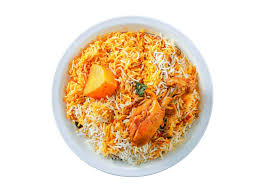

Biryani

Description
Biryani is a mixed rice dish, mainly popular in South Asia. It is made
with rice, some type of meat (chicken, goat, pork, lamb, beef, prawn, or
fish) and spices. To cater to vegetarians, in some cases, it is prepared
by substituting vegetables or paneer for the meat. Sometimes eggs and/or
potatoes are also added.
Biryani is one of the most popular dishes in South Asia and among the
South Asian diaspora, although the dish is often associated with the
region's Muslim population in particular. Similar dishes are also prepared
in other parts of the world such as in Iraq, Myanmar, Thailand, and
Malaysia. Biryani is the single most-ordered dish on Indian online food
ordering and delivery services, and has been labelled as the most popular
dish overall in India.
Ingredients
Serves 10
- 1 skinless chicken cut into 10 or 16 pieces
-
4 rice cooker cups of basmati rice. washed and soaked for 30 minutes
- 2 tbsp of toasted and ground cumin and coriander
- 1/2 tsp of salt
- 5-6 chopped green chilies
- 1 box of shan Bombay Masala
- 2 tbsp of garlic paste
- 2 tbsp of ginger paste
- 3 tbsp of whipped room temperature yogurt
- 3 chopped roma tomatoes
- 1/2 cup of fried onions (ready made)
- 1 yellow onion sliced
- 1/2 a cup of dried plums (aloo Bukhara) (optional)
- 1 tsp of kewra (optional)
- 1 tsp of orange food color
- 1/2 tsp of chaat masala
- juice of 1 lemon
- 1 small sliced tomato
- 1 bunch of chopped cilantro
- 3/4th cup of oil for frying
- 4 tbsp of butter
Steps
GRAVY:
-
Place a large cooking pot (should be big enough for layering) over the
stove over medium high heat. pour in the oil and when hot add in the
sliced onion till they are golden brown. remove with a slotted spoon on
a paper towel.
-
in the same oil over medium high heat, add in the butter, the chopped
green chilies and the ginger garlic pastes. Sauté for 3 minutes till
fragrant and add in the chicken and 1/2 cup of the ready made fried
onions. Fry on high heat until the color of the chicken changes.
-
Next up, add in the boxed masala, the salt, cumin coriander powders, the
chopped tomatoes and the yogurt. Reduce the heat to medium and cook till
the oil separates.
-
When the oil separates, you want to crank the heat up to high. This
gravy Neds to be a thick one for layering purposes. You want the gravy
not to be too dry, but not to be extremely runny either. it should be a
thick salad.
- once it is done cooking, remove this gravy in to a dish.
RICE:
- wash the rice and soak it for 10 minutes. Drain
-
While the rice is soaking, Bring a large pot of water to boil. in that
add 1 stuck of cinnamon, 1 big elaichi, 4-8 peppercorns, 3-4 small
cardamoms, 1 star anise, 2 lemon slices and 2 tbsp of salt. Bring the
water to boil.
-
Once the water has come to a rolling boil, add in the washed drained
rice.
- Cook the rice for 8 minutes. You want the rice 95% done.
-
drain and set aside. (at this point if you want to remove the sabut
Garam Masala you can)
ASSEMBLY:
-
In the pot that the biryani gravy was made, pour about 1 tsp of oil and
a layer of rice. Then layer over a little bit of the gravy add some of
those homemade fried onions you made.
-
Next add more rice over the gravy, add a another layer of gravy. before
you add the last layer of rice, on the gravy sprinkle some more of those
homemade fried onions, the sliced tomato, 1/2 of the chopped cilantro,
the juice of the lemon and the chaat masala. If you are using kewra, now
is the time to sprinkle that over the gravy for that lovely aroma. You
can add color (optional) at this stage or over the final layer of rice.
it is entirely up to you.
-
Add the final layer of rice, and 4-5 tbsp of oil all over this layer. I
like to sprinkle the remainder of the chopped cilantro over the rice.
-
Place a cloth or tightly wrap the pot with some foil before you put the
lid on. Once the lid is securely on, you want to put some thing heavy on
the pot. I usually use my heavy mortar and pestle bowl for this. place
the pot on a flat tava and cook on very low heat for about an hour. This
process is called giving dum. the steam will meld the flavors together
and will cook the remaining 10% of the rice.
-
if you are doing this in a foil tray, cover the tray tightly with foil,
and place in an oven at 350F for about 45 minutes.
-
Once the cook time is done, shake the pot to ensure all the masala has
coated the rice. You can serve the biryani with extra plain white rice
for those who don't want it too spicy.
- Serve and garnish with cilantro.